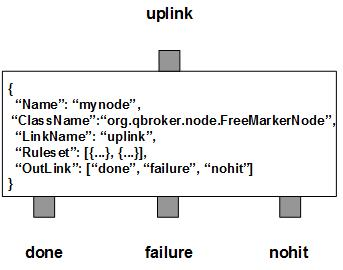

FreeMarkerNode extracts the path of a FreeMarker template and the data from the incoming JMS message and applies the FreeMarker template to the data. The output will be set to the message body as the result. The message will be routed to the first outlink.
FreeMarkerNode contains a number of predefined rulesets. These rulesets categorize messages into non-overlapping groups. Therefore, each rule defines a unique message group. The ruleset also defines the transformation parameters, such as DataType, RootNodeName and a template to build the the paths to the FreeMarker template files, as well as their TTL. The cache count of templates for the rule will be stored to RULE_PEND. It will be updated when the session time exceeds the given SessionTimeout.
FreeMarkerNode always adds an extra ruleset for the nohit messages. This nohit ruleset is always the first ruleset with the id of 0. On the node level, DisplayMask and StringProperty control the display result of outgoing messages.
You are free to choose any names for the three fixed outlinks. But FreeMarkerNode always assumes the first outlink for done, the second for failure and the last for nohit.
Apart from the common properties, there are three implementation specific properties for FreeMarkerNode.
| Property Name | Data Type | Requirement | Description | Examples |
|---|---|---|---|---|
| SessionTimeout | integer | optional | timeout in sec for a session | 3600 (default: 0) |
The format operation is executed via the pre-defined rulesets. Therefore, the configuration of the rulesets is critical to the operations of FreeMarkerNode. Here are complete properties of rulesets for FreeMarkerNode.
| Property Name | Data Type | Requirement | Description | Examples |
|---|---|---|---|---|
| Name | alphanumeric with no spaces | mandatory | name of the ruleset | event |
| URITemplate | string | optional | template for the full path of the template file | /opt/qbroker/ftl/##TempName##.ftl |
| URISubstitution | string | optional | text substitution for the full path of the template file | s/\.txt$/\.ftl/ |
| TimeToLive | integer | optional | seconds to cache the FreeMarker templates | |
| RootNodeName | string | optional | root node name for the data model | Doc (default: "") |
| DataType | string | optional | data type of the payload for the data model | JSON (default: JMS) |
| PreferredOutLink | alphanumeric with no spaces | mandatory for bypass only | name of the preferred outlink | bypass |
| FormatterArgument | list | optional | list of post format operations | see example |
| JMSPropertyGroup | list | optional | list of pattern groups on properties to select messages | see example |
| XJMSPropertyGroup | list | optional | list of pattern groups on properties to exclude messages | see example |
| PatternGroup | list | optional | list of pattern groups on body to select messages | see example |
| XPatternGroup | list | optional | list of pattern groups on body to exclude messages | see example |
| StringProperty | map | optional | for setting the user properties on the messages | see example |
{
...
"Ruleset": [{
"Name": "bypass",
"PreferredOutLink": "BYPASS",
"JMSPropertyGroup": [{
"JMSType": "^score$"
}]
}],
...
}
where it routes the messages to the outlink of BYPASS.
Here is an example of the transform ruleset.
{
...
"Ruleset": [{
"Name": "tm",
"JMSPropertyGroup": [{
"FMTemp": "."
}],
"DataType": "XML",
"RootNodeName": "Doc",
"URITemplate": "/opt/qbroker/ftl/##FMTemp##.ftl",
"TimeToLive": "7200"
}],
...
}
where it expects that the message has defined the template file name in its
FMTemp property. The node will extract the XML data from the message body.
Upon success, the message body will contain the new content formatted from the
FreeMarker template.
Here is an example of FreeMarkerNode:
{
"Name": "node_fm",
"ClassName": "org.qbroker.node.FreeMarkerNode",
"Description": "format messages",
"Operation": "format",
"LinkName": "root",
"Capacity": "6",
"WaitTime": "50",
"DisplayMask": "0",
"Debug": "1",
"SessioTimeout": "600",
"Ruleset": [{
"Name": "html",
"JMSPropertyGroup": [{
"FMTemp": "."
}],
"URITemplate": "/opt/qbroker/ftl/##FMTemp##.ftl",
"TimeToLive": "3600"
}],
"OutLink": ["out", "failure", "nohit"]
}